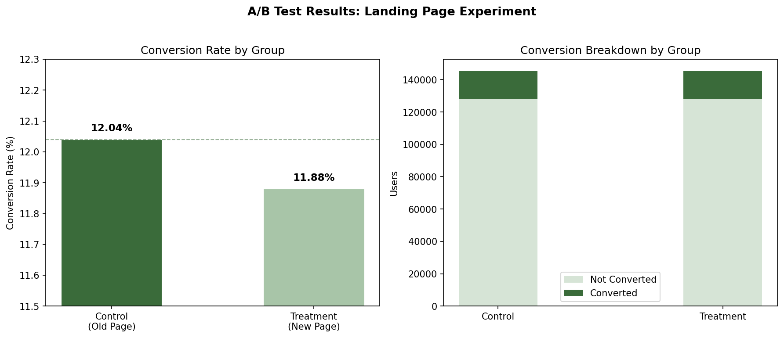
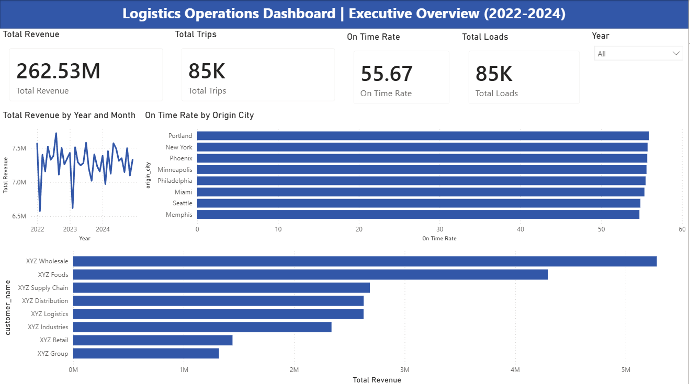
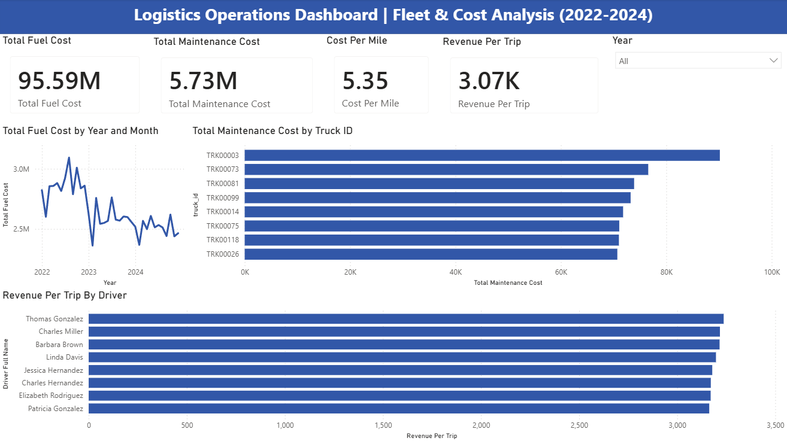
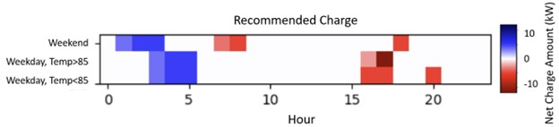
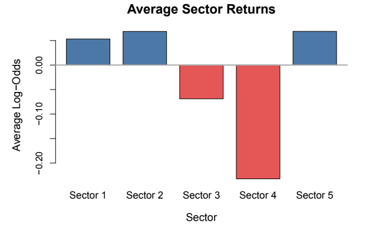
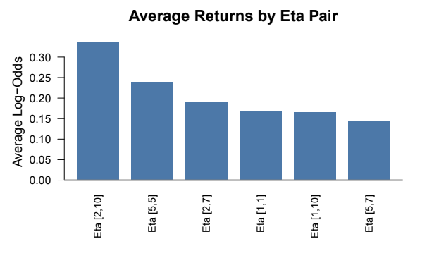
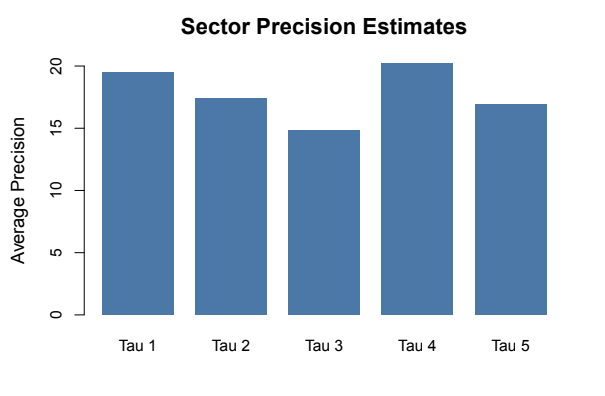

Superstore Sales Performance
End-to-end data analysis project examining 4 years of retail sales data (9,994 transactions) for a fictional office supply company. Wrote 7 business-driven SQL queries in DuckDB to surface margin erosion across product categories, then built a published Tableau Public dashboard with KPI cards, a regional map, and interactive filters.
Key Findings- The West region drove the highest revenue, while the Central region consistently underperformed on margin.
- Technology was the highest-margin category.
- Furniture (particularly Tables) operated at a loss after discounts.
- Heavy discounting in the Central region correlated directly with negative profit; reducing discounts by 10% would recover an estimated $18k annually.
- Q4 accounted for ~35% of annual revenue, suggesting strong seasonal concentration risk.
| Sub-Category | Total Sales | Total Profit | Margin % | Avg Discount |
|---|---|---|---|---|
| Tables | $206,966 | -$17,725 | -8.56% | 26.13% |
| Bookcases | $114,880 | -$3,473 | -3.02% | 21.11% |
| Supplies | $46,674 | -$1,189 | -2.55% | 7.68% |
| Paper | $78,479 | $34,054 | 43.39% | 7.49% |
| Labels | $12,486 | $5,546 | 44.42% | 6.87% |
Data was cleaned and aggregated in SQL (DuckDB), then visualized in Tableau. Profit margin was decomposed by month, region, category, and sub-category to isolate loss drivers. A discount sensitivity analysis was run to quantify margin impact.
Dashboard
A/B Test Analysis: Landing Page Experiment
Statistical analysis of a controlled landing page experiment across 290,584 users to determine whether a redesigned page produced a statistically significant improvement in conversion rate. Includes full data cleaning, hypothesis testing, effect size calculation, and a business memo with a ship/no-ship recommendation.
MethodologyAfter cleaning and validating the dataset, we performed a chi-square test of independence to compare conversion rates between the control and treatment groups. We also calculated Cohen's h to measure the effect size of the observed difference in conversion rates.
Results| Group | Users | Conversions | Conversion Rate |
|---|---|---|---|
| Control (Old Page) | 145,274 | 17,489 | 12.04% |
| Treatment (New Page) | 145,310 | 17,264 | 11.88% |
Chi-square test returned a p-value of 0.19, which is well above the 0.05 significance threshold. Effect size (Cohen's h) of 0.005 confirmed the difference was negligible. For the final recommendation, we would recommend to not ship the new page.
Bar Chart
Logistics Operations Dashboard | 2022-2024
End-to-end business intelligence project analyzing three years of operational data from a fictional Class 8 trucking company. Built a two-page Power BI dashboard covering executive performance metrics and fleet cost analysis across 361,799 records and 14 interconnected tables, connected through a star schema with TRIPS and LOADS as the central fact tables.
Data ModelThe dashboard connects 14 tables through 14 manually configured relationships with single direction cross-filtering to avoid ambiguous filter paths. Core DAX measures were built for total revenue, on-time rate, cost per mile, fuel cost trends, maintenance cost by truck, and revenue per trip by driver.
Key Findings| Metric | Value | Notes |
|---|---|---|
| Total Revenue | $262.53M | Across 85K trips, 2022-2024 |
| On-Time Delivery Rate | 55.67% | Well below 85-95% industry standard |
| Total Fuel Cost | $95.59M | Peaked in early 2023, declined through 2024 |
| Total Maintenance Cost | $5.73M | TRK00003 carries disproportionate share |
| Cost Per Mile | $5.35 | Combined fuel and maintenance |
| Revenue Per Trip | $3.07K | Consistent across top drivers |
The most notable finding is the on-time delivery rate of 55.67% across all origin cities. Every city in the top 8 shows nearly identical rates, which points to a systemic operational issue rather than a route-specific problem. On the cost side, fuel spend tracks real-world diesel price patterns, peaking in 2023 and declining steadily into 2024. Customer revenue is also heavily concentrated in two accounts, XYZ Wholesale and XYZ Foods, which represents a meaningful business risk.
Executive Overview
Fleet and Cost Analysis
How to ViewThe full interactive dashboard is available as a .pbix file in the repository. Download Power BI Desktop for free at powerbi.microsoft.com, then open the .pbix file directly. All data connections are embedded and will load automatically.
COTA Bus Stop Optimization
Formulated a Maximum Coverage Location Problem (MCLP) using Python and Gurobi to optimize bus stop placement across Columbus, integrating U.S. Census and COTA transit data to help approximately 43,000 residents under infrastructure constraints.
Full model with variables, constraints, and objective function:
Grey dots represent existing stops, blue dots show candidate locations, and red dots mark the 5 optimal selected stops. The model adds 42,986 additional residents to covered population.

| Stop | GEOID | Latitude | Longitude | Population |
|---|---|---|---|---|
| 16 | 39049009390 | 39.974217 | -82.790753 | 7,768 |
| 40 | 39049006241 | 40.077974 | -83.165966 | 8,591 |
| 41 | 39049007398 | 40.013312 | -82.780411 | 9,389 |
| 82 | 39049009755 | 39.869836 | -83.044463 | 7,639 |
| 130 | 39049007209 | 40.068750 | -82.852063 | 9,599 |
IGS Energy - Battery Optimization
Developed a time-series regression model on energy consumption data to optimize residential battery dispatch - projecting $1,700+ in annual customer savings by charging during off-peak hours and discharging during peak pricing windows.
Time-Series Price Model- Battery cannot be charged and discharged simultaneously.
- No more than two batteries are fully cycled per day.
- Initial state of charge: 0 kWh.
Blue = charge, Red = discharge. We broke the day into 24 one-hour intervals and recommended charging during low-price hours (3-5am) and discharging during high-price hours (4-7pm) to maximize cost savings while respecting battery constraints.

Stock Market Prediction - Bayesian Hierarchical Model
Built a Bayesian hierarchical model to estimate company- and sector-level probabilities of positive stock returns. Because companies within a sector share economic influences, the model uses partial pooling to borrow information across companies - producing more stable, uncertainty-aware estimates than independent models.
Model Specification- \(y_{scf}\): Observable response - 1 if company \(c\) in sector \(s\) had a positive return at observation \(f\), else 0.
- \(\theta_{sc}\): Probability of a positive net return for company \(c\) in sector \(s\).
- \(\eta_{sc}\): Log-odds of a positive return for company \(c\) in sector \(s\).
- \(\mu_s\): Sector-level mean log-odds of a positive return.
- \(\tau_s\): Precision of the log-odds within sector \(s\).
- \(s\), \(c\), \(f\): Sector, company, and observation indices respectively.
Sectors 1, 2, and 5 are recommended for investment. Company 10 in sector 2 and company 5 in sector 5 showed the highest posterior probabilities of positive returns. Sector 1 exhibited the highest posterior precision, indicating the most consistent company performance and lowest within-sector variance, making it the most stable choice.
Average Posterior distributions by Sector
Average Posterior Log-Odds by Sector and Company
Average Posterior Precision by Sector